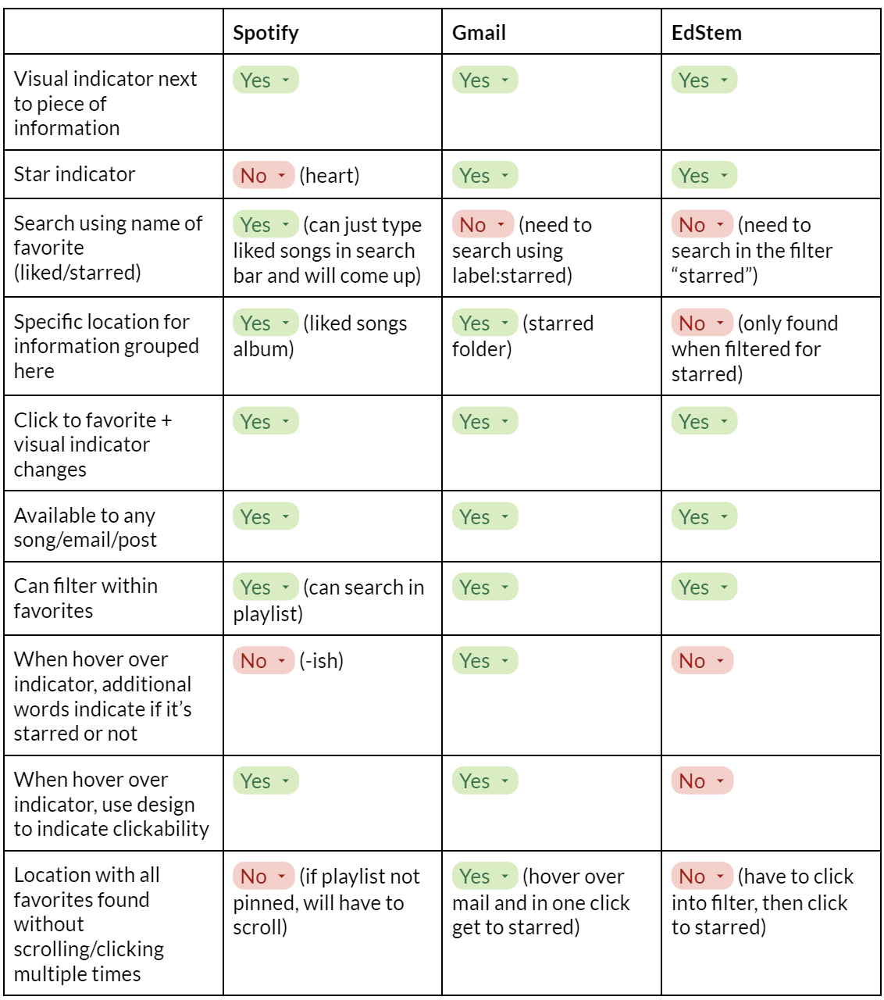
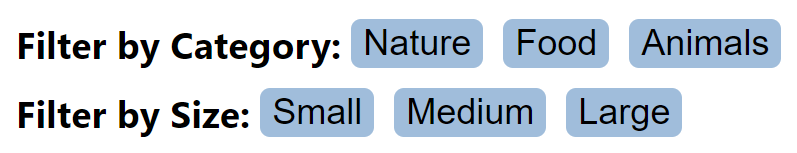
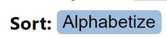
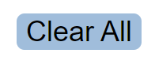
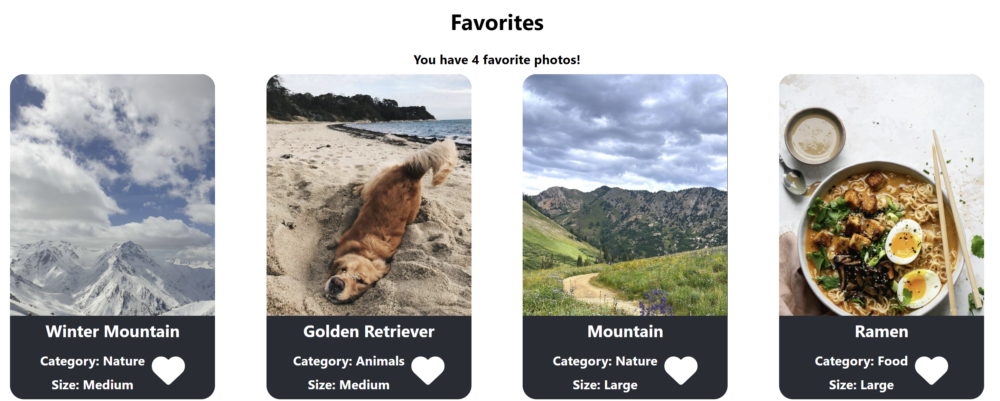
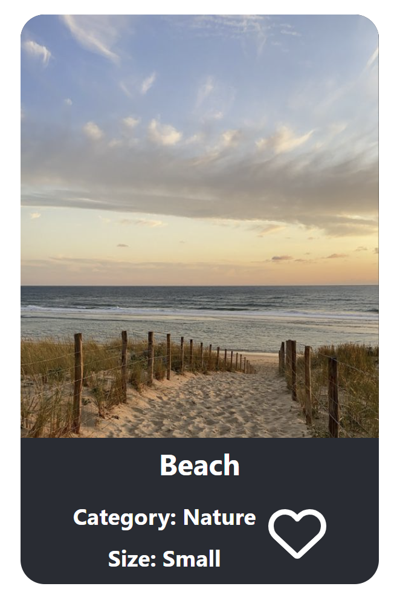
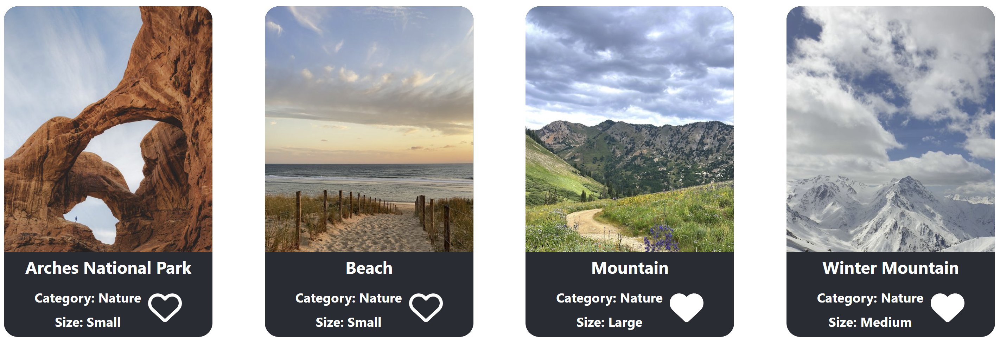

Competetitive Analysis
First up, I practiced conducting competitive analysis between competitor companies. Through this process, I was able to idently strengths and weaknesses in design elements employed by industry designers. To do this, I chose 3 companies that utilise a favoriting function, Spotify, Gmail, and EdStem. Below is the competitive analysis chart I created regarding factors relating to the favoriting function on each site.
Competitive Analysis Chart
Using these websites, I discovered a lot about how favoriting functions work on the three websites I chose - Spotify, Gmail, and EdStem.
- First for Spotify, the user interface design for the liked songs is overall straightforward and similar to both Gmail and EdStem in that you click an icon that changes from outlined to filled in to show that it is liked. In addition, Spotify allows users to easily search for the Liked Songs playlist by typing “liked” into the search bar with no additional search criteria, labels, or filtering. A weakness is that hovering over the heart can be unintuitive because it states the opposite action, as it lets you know what will happen if you click, but this can be confusing if you think that is what the current state is. Additionally, if the Liked Songs folder is not pinned, it could be difficult to find depending on how a user organizes their playlists.
- Next, like Spotify, Gmail also has a specific location where a user can find their starred items. For Gmail, this folder is always located right under the inbox, so you can get there in one click. The hovering is also more intuitive than Spotify as a small note will pop up letting the user know the current state of the starred email. However, to find starred emails by searching, you must use label:starred instead of just searching “starred” which can be slower.
- Thirdly, EdStem’s main strength is having a very simple interface with not many tools or folders on screen. However, for starred posts, this means that there is not a specific folder like Gmail or Spotify, but only by using the filter mechanism can a user filter for starred posts. This is the same for searching much like Gmail, where one cannot search for “starred”, but must filter first then search.
TL;DR Strengths and Weaknesses
- Spotify
-
- Strengths: can search for whole folder without filtering first
- Weaknesses: hovering can be unintuitive; folder could difficult to find if not pinned
- Gmail
-
- Strengths: easy to find, hovering intuitive tells you if starred or not
- Weaknesses: cannot search for all starred must filter instead
- EdStem
-
- Strengths: simple interface
- Weaknesses: not a specific folder/location for them besides using the filter; cannot search for all starred must filter instead
Based on what I found in my competitive analysis, I'd like to implement the following factors and designs:
- Easily clickable with visual element for the user to click and see an immediate change
- One place with all the elements of a specific grouping, such as a folder
- Search by keyword, including overall groups (Note: For this project, I did not end up adding in this functionality)
Implementation
For the implementation of an application that uses lists and an
aggregator, I chose a photo app for my theme where users can like
photos shown on the page.
I incorporate filters by allowing users to filter using the
category of photo (nature, animals, food) and also by size of photo
(small, medium, large). I incorporate sorting by allowing users to
alphabetically sort the list of photos by name, helping them find the
photo they’re looking for. To aggregate, I have a “Favorites” list at
the bottom of the page. When users click the heart on a photo that
photo will be added to their favorites list. This allows users to
create a list with their favorite photos all in one place.
My deployed app can be found here.
App Functionality
| Functionality | About | Image |
|---|---|---|
| Filtering | I include 2 ways to filter - by category and by photo size |  |
| Sorting | The images can be sorted alphabetically by name |  |
| Reset | All filters and sorts can be reset by the "Clear All" button |  |
| Aggregator | The favorities aggregator total updates when users add or remove items by including the item in the favorite list and updating the number of items that are favorited |  |
| Item Cards | 12 item cards are included in this application, each displaying its image, name, categories for filter, fields for sort (name), and a button to add and remove the item from the aggregator |  |
| Compatability | Filter and sort are compatible and work in combination. You can click as many combinations of filters and the sort. (Pictured is sorted and filtered by nature) |  |
Conclusions
Throughout this process, I gained experience with developing software in React as well as in conducting a competitive analysis. I found it incredibly rewarding to take the design principles talked about in class and apply them to an app that works. These same principles can be applied to a variety of areas in both professional and academic contexts.